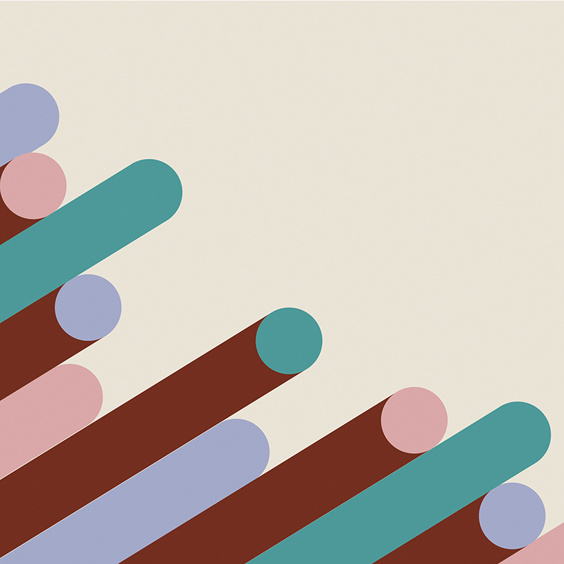

Design Statement

Art is how I fill the quiet spaces in my heart with optimism. My favorite medium is vectors that
allow me to feel free - to make mistakes, to do experiemnts and numerous tests for achieving perfection.
Graphic designs have eveloved into various forms in today's media-centric society. I love to see the new
trends
to apply into my artworks. For example, I want to try to create motion typography
and icons (called anicon) by developing my previous design works.
I feel lucky being as a graphic designer. This is how I communicate with the world, and the reason why I
want
to share my artistic sense with the others.